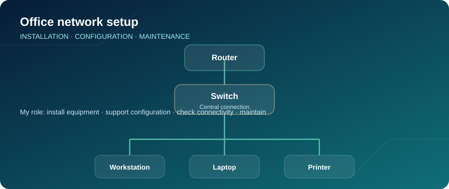

Challenge
Installing and configuring network components correctly so that colleagues could continue working without disruption.
Helping keep the office connected by assisting with network installation, configuration, and routine IT maintenance.

A dependable network is the foundation of everyday work. During my internship, I assisted the IT team with installing and configuring network equipment and with the routine maintenance that keeps systems running.
I worked alongside experienced colleagues on practical, hands-on tasks in a live office environment. The work connected directly to the network design and setup modules I had studied at KCA University.
The experience turned classroom theory into real-world practice. I gained confidence in network installation, basic troubleshooting, and the importance of careful, methodical work in IT support.
How a practical internship task built a stronger technical foundation.
Installing and configuring network components correctly so that colleagues could continue working without disruption.
Followed the team's procedures, checked connectivity carefully, and asked questions whenever a step was unclear.
Hands-on confidence with network installation and maintenance, backed by coursework in network design and setup.